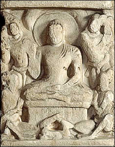

The First Sermon
After achieving Enlightenment, the Buddha gave a sermon at the Deer Park at Sarnath. In this First Sermon the Buddha set the Wheel of the Law in motion. This scene shows the Buddha sitting on a platform with one hand raised in a gesture of banishing fear, called abhaya mudra. Around him are several worshippers. |